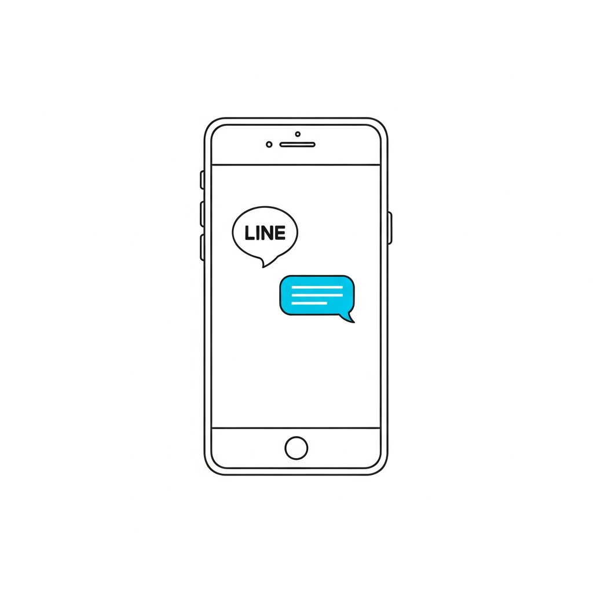

What is TomoTrip?
TomoTrip is a local guide matching platform.
Connect with locals in Okinawa and across Japan for experiences that guidebooks don't show you.
Local guides across Japan
From Okinawa to Hokkaido — real locals who know their hometown inside out.
Flexible, personalized plans
No fixed tour packages. Design your own experience based on your interests and schedule.
Hidden spots & daily local life
Experience the Japan that only locals know — food, culture, neighborhoods, and hidden gems.
How It Works

Choose your path
Are you a traveler, a local guide, or a business? Select the option that fits you.
Browse & connect
Browse guide profiles and send a request directly through the TomoTrip app.
Enjoy your experience
Meet your guide and explore Japan the local way — on your schedule.
For Travelers
Visiting Japan and want more than the standard tourist route?
TomoTrip connects you with local guides who can take you somewhere real.
- Hidden local spots, real neighborhoods
- Local food, cafes, everyday culture
- No Japanese required — English-speaking guides available
- Flexible plans — your schedule, your pace
For Local Guides
Live in Japan and want to share your local knowledge?
Become a guide on your own terms — no fixed schedule, no license required.
- Flexible schedule — work when it suits you
- No professional tour guide license needed
- Available to guides across Japan — any region
- Share your daily life, local knowledge, and community
For Partner Stores
Own or manage a local business in Japan?
Partner with TomoTrip to reach travelers through guide recommendations.
- Restaurants, cafes, activities, shops & more
- Promotion through local guide referrals
- Reach travelers seeking authentic local experiences
Safe, Simple & Transparent
Verified Guides
All guides are reviewed and approved before joining the platform.
In-App Communication
All messages and bookings happen through the TomoTrip platform — no private contact required.
Clear Pricing
Prices are shown on each guide's profile. No hidden fees or surprise charges.
English Support
Our team responds in English. Ask questions any time before, during, or after your experience.
We are committed to safe, enjoyable experiences for every traveler, guide, and partner on the platform.